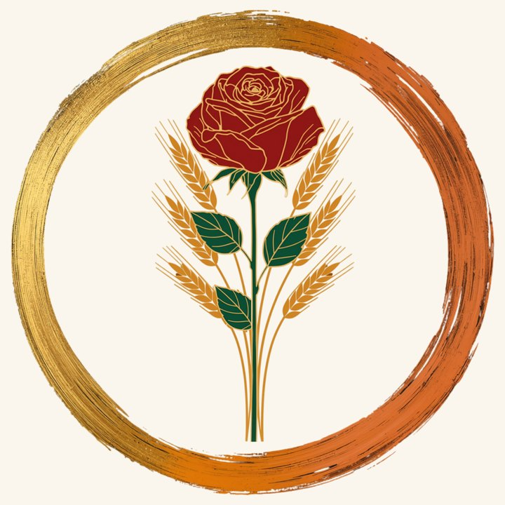

Costituita perché ciò che una persona ha costruito, così come il suo patrimonio, grande o piccolo, continui a fare del bene alla vita e nella vita: nel lavoro della terra, nella cura delle persone, nell’accompagnamento al fine vita.